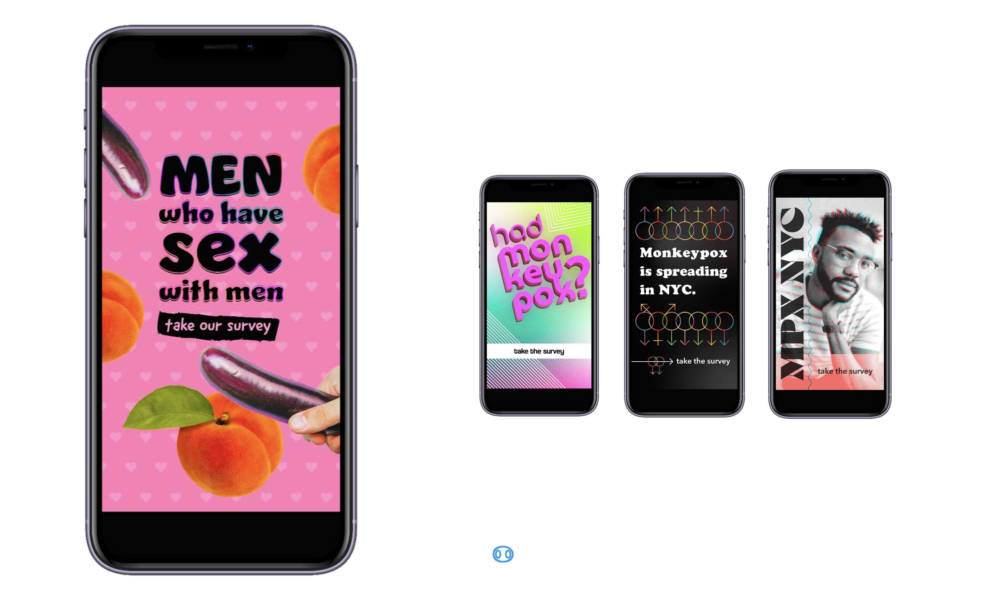

Code
plot_icon(icon_name = "devil", color = "dark_orange", shape = 16, alpha = 0.1)
Data were collected using a custom designed survey instrument we call the MPX NYC Person-Place Network Mapper. The Person-Place Network Map question was designed to safely elicit sensitive spatial information from survey participants. It displays a map with detailed geographic information including place names, roads, and neighborhood names (see Figure D.1).
To enter spatial information, the participant is prompted to identify places of a certain type by tapping on the map. Each time the participant taps the map, a marker appears where they tapped, and a pop-up window asks questions about the most recently identified location. To ensure anonymity, the survey tool coarsens spatial data to the census tract level before sending them to the study database. Census tracts are non-overlapping spatial units that partition the United States into areas ranging from \(2500\) to \(8000\) in population size (US Census 2022).

We invested in a bilingual, culturally competent communication campaign in collaboration with a marketing agency. As a starting point, the RESPND-MI team suggested a campaign that playfully uses emojis that have sexual connotations in queer and trans communities, and that integrates LGBT social media influencers as a communication channel. Participants were recruited via paid and donated advertising placed through Grindr, Twitter, Instagram, and outdoor electronic billboards.
Prospective participants read and responded to a consent statement before being able to take the survey. The study, including marketing materials and software, was reviewed and approved by the T.H. Chan School of Public Health Institutional Review Board (IRB22-0761).
Potential participants were included in the study if they consented to participate, were over 18 years of age, identified as transgender, gay, bisexual, or as men who have sex with other men, and were in New York City in the four weeks preceding their participation. Potential participants were excluded if they were younger than 18 years of age or they withdrew consent.
All study materials were professionally translated from English to Spanish. The translation was reviewed by six professionals in health-related fields whose primary language is Spanish.
plot_icon(icon_name = "devil", color = "dark_orange", shape = 16, alpha = 0.1)